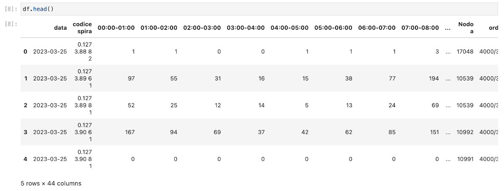

ETL scenario introduction
Here we explore a proper, realistic scenario. We collect some data regarding traffic, analyze and transform it, then expose the resulting dataset.
Access Jupyter from your Coder instance and create a new notebook. If a Jupyter workspace isn't already available, create one from its template.
Open a new notebook using the Python 3 (ipykernel) kernel.
We'll now start writing code. Copy the snippets of code from here and paste them in your notebook, then execute them with Shift+Enter. After running, Jupyter will create a new code cell.
The notebook file covering this scenario, as well as files for individual functions, are available in the documentation/examples/etl path within the repository of this documentation.
Set-up
First, we initialize our environment and create a project.
Import required libraries:
import mlrun
import pandas as pd
import requests
import os
Load environment variables for MLRun:
ENV_FILE = ".mlrun.env"
if os.path.exists(ENV_FILE):
mlrun.set_env_from_file(ENV_FILE)
Create a MLRun project:
PROJECT = "demo-etl"
project = mlrun.get_or_create_project(PROJECT, "./")
Check that the project has been created successfully:
print(project)
Peek at the data
Let's take a look at the data we will work with, which is available in CSV (Comma-Separated Values) format at a remote API.
Set the URL to the data and the file name:
URL = "https://opendata.comune.bologna.it/api/explore/v2.1/catalog/datasets/rilevazione-flusso-veicoli-tramite-spire-anno-2023/exports/csv?lang=it&timezone=Europe%2FRome&use_labels=true&delimiter=%3B"
filename = "rilevazione-flusso-veicoli-tramite-spire-anno-2023.csv"
Download the file and save it locally:
with requests.get(URL) as r:
with open(filename, "wb") as f:
f.write(r.content)
Use pandas to read the file into a dataframe:
df = pd.read_csv(filename, sep=";")
You can now run df.head() to view the first few records of the dataset. They contain information about how many vehicles have passed a sensor (spire), located at specific coordinates, within different time slots. If you wish, use df.dtypes to list the columns and respective types of the data, or df.size to know the data's size in Bytes.

In the next section, we will collect this data and save it to the object store.